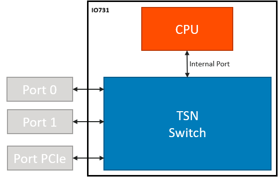
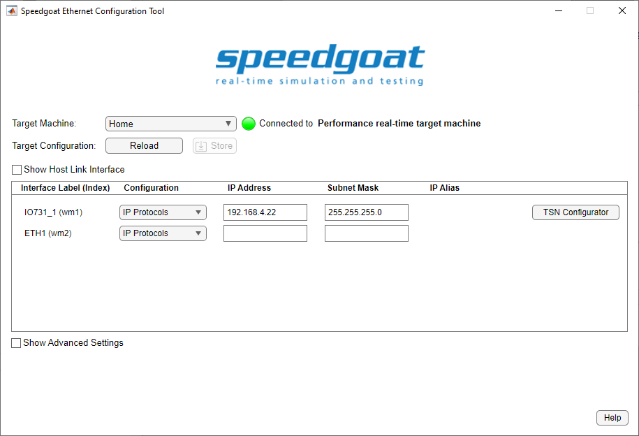
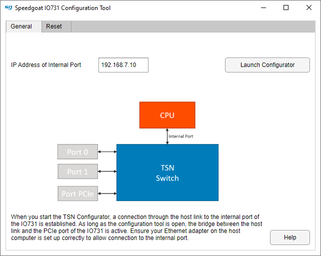
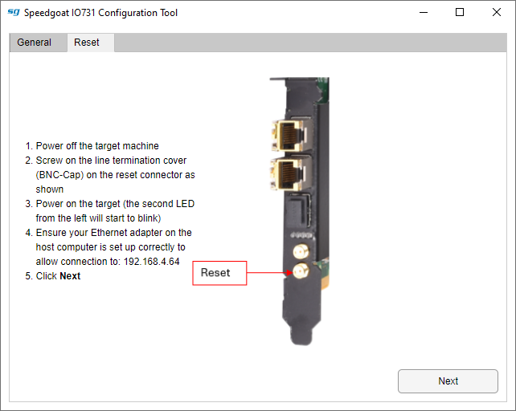
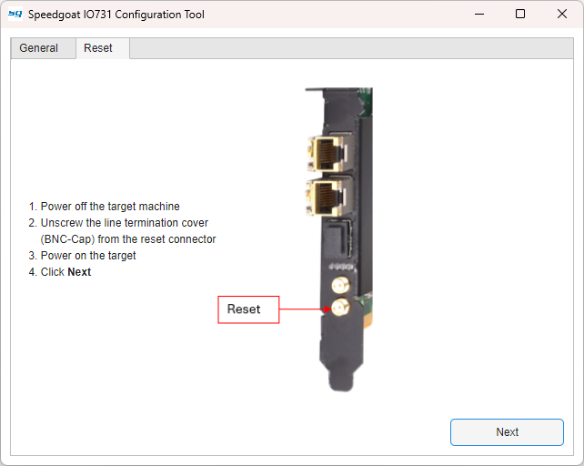
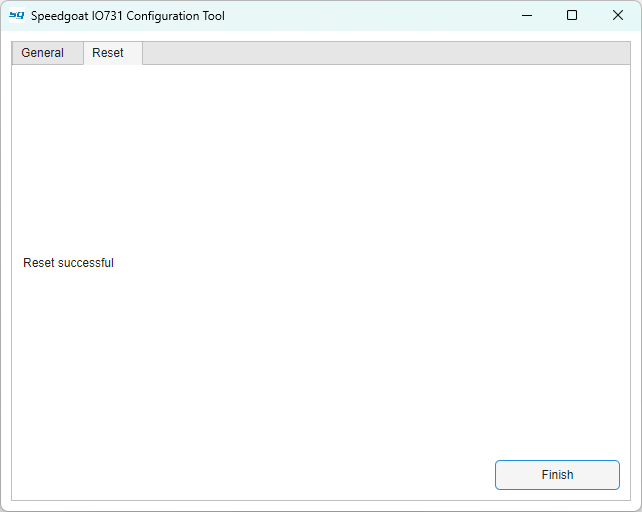

IO731 - Configuration
IO731 - Configuration — Configure the IO731 TSN I/O module
Description
The IO731 combines TSN Endpoint and TSN Bridge functionality into a single I/O module. Two SFP Ethernet ports (Port-0 and Port-1) provide access to the TSN network. The Ethernet interface (PCIe) is available within Simulink® Real-Time™ to access the data packets. The IP address of the PCIe Ethernet interface can be set in the Speedgoat Ethernet Configuration Tool. The Internal Port is used to access the CPU of IO731, which allows you to configure the module. The IP address of the Internal Ethernet interface can be set in the Speedgoat IO731 Configuration Tool.

Configuration
This interface is configured using the Speedgoat Ethernet Configuration Tool. To open the tool, run the following command in the MATLAB Command Window, then click the TSN Configurator button:
speedgoat.configureEthernet

![[Note]](images/note.png) | Note |
|---|---|
When you start the TSN Configurator, a connection through the host link to the internal port of the IO731 is established. The TSN Configurator button turns green to indicate this. As long as the configuration tool is open, the bridge between the host link and the PCIe port of the IO731 is active. |
General Tab

- IP Address of Internal Port
Specify the IP address for the internal port.
Note If you want to change the IP address, first connect to the IO731 and then update the IP address. If you do not connect to the module, you cannot establish a connection and store the new value.
- Launch Configurator
Launches the configurator in your default web browser.
Note You must be connected to your target machine using the host-target link to be able to access the IO731.
Reset Tab
This utility guides you through the reset procedure of the IO731. Follow the instructions step-by-step as indicated by the tool.

- Next
Follow the instructions listed and then click Next to continue.
Note In case of an error, check whether you can ping the IP address 192.168.4.64 from the host before you click Next again.

Follow the instructions listed and then click Next to continue.
| Note |
|---|---|
In case of an error, close the configurator and run the reset procedure again from the beginning. Make sure to only click Next when your target has fully started up. |

- Finish
After a successful reset, click Finish to complete the reset procedure.